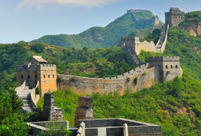
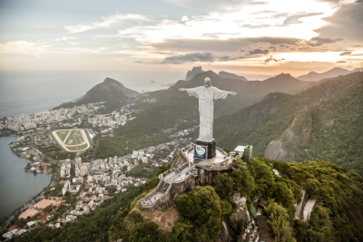

Destinations
Browse through our most highly-rated destinations below:
Mount Fuji

Mount Fuji, Japan's iconic peak, stands as a breathtaking symbol of natural beauty and cultural significance. Rising 3,776 meters above sea level, this dormant volcano offers spectacular views, especially at sunrise. Whether you’re hiking...
Take me thereGreat Wall of China

The Great Wall of China is a monumental feat of ancient engineering, stretching over 13,000 miles through rugged landscapes. This iconic structure, built over several dynasties, offers visitors a chance to step back in time and marvel at its immense...
Take me thereTaj Mahal

The Taj Mahal, a UNESCO World Heritage site, is one of the most stunning monuments in the world, renowned for its breathtaking beauty and timeless elegance. Located in Agra, India, this marble mausoleum was built by...
Take me thereMachu Picchu

Machu Picchu, the ancient Inca city nestled high in the Peruvian Andes, is one of the most awe-inspiring archaeological sites in the world. Surrounded by mist-covered mountains, this UNESCO World Heritage site offers stunning views and a glimpse into the advanced engineering and culture of the...
Take me thereChrist the Redeemer

Christ the Redeemer, standing atop the Corcovado Mountain in Rio de Janeiro, Brazil, is a symbol of peace, faith, and Brazilian culture. This iconic statue, reaching 98 feet tall with arms...
Take me there